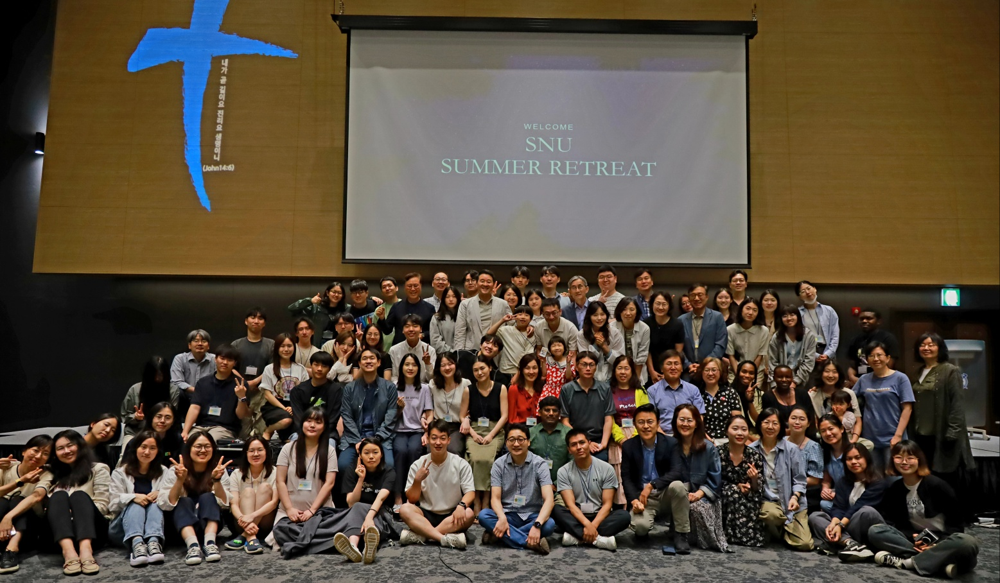

Ministries and Activities
사역과 활동

- 오전 영어한국어 연합 예배와 오후 한국어예배로 나누어 예배를 비롯한 각종 사역을 다음과 같이 진행중입니다.
- 주일예배 (오전10:30~12:00, 오후2:00~3:30)
- 목장모임: 주일예배후 학부(4개), 대학원(5개), 유학생(3개) 목장(새신자 목장 포함)이 각각 모여 성경공부, 기도제목 및 설교 나눔, 친교진행.
- 아침기도회: 오후한국어예배 월~금 오전 7:00~8:00, ZOOM으로 진행
- 금요기도회: 매주 목요일 오후7시 학부생 기도 모임
- Friday parayer meeting: 매주 금요일 오후7시 유학생 기도 모임
- 금요기도회: 매주 금요일 오후 7시 30분 대학원생 기도 모임
- 월삯기도회: 매월 첫째 금요일7시 학부 및 유학생 기도 모임
- 섬김이기도회: 매주 토요일 8시
- 목자/부목자 양육: 매주 주일(학부)/매월 셋째주일(대학원)
- 세례식/성찬식: 각 예배별 정기적(분기/반기) 진행
- 수련회: 교회전체 연합수련회(연1회), GSM컨퍼런스참가, 예배별 전체/섬김이 수련회
- 공동체성경읽기: 매일 오후한국어예배 진행
- 기타행사: 성탄예배, 송구영신예배, 부활주일, 추수감사주일, 파송식, 졸업/봄가을 포토데이 등
-
We are conducting various ministries, including worship services divided into morning bilingual (English-Korean) services and afternoon Korean services as following
-
Sunday Sermon (Morning Sermon 10:30~12:00, Afternoon Sermon 14:00~15:30)
-
Small group meeting: After Sunday sermon, we gather as small groups for Bible study, sharing prayer requests and sermons, and fellowship. We have small groups for undergraduates (4 groups), graduate students (5 groups), international students (3 groups), and for newcomers.
-
Morning prayer meeting: Afternoon prayer meeting from Monday to Friday, 7:00~8:00, conducted online through ZOOM
-
Prayer meeting: Every Thursday at 19:00 we have prayer meeting for undergraduate students
-
Friday prayer meeting: On every Friday at 19:00, prayer meeting for international students
-
Friday prayer meeting in Korean: On every Friday at 19:30, prayer meeting for graduate students
-
월삯기도회: On First Friday of every month, we have combined prayer meeting for international and Korean students at 19:00.
-
Service prayer meeting: Every Saturday 21:00
-
Pastor/assistant pastor training: Every Sunday(for undergraduate students)/Third Sunday of every month(for graduate students)
-
Baptism/Communion: Regular (quarterly/semi-annual) scheduling for each worship service
-
Retreat: Church-wide joint retreat(annual), GSM conference, retreat for entire congregation/service teams
-
Bible studies: Daily afternoon Bible studies in Korean
-
More: Christmas worship service, Repentance and revival worship service, Easter Sunday, Thanksgiving Sunday, commissioning service, Graduation/Spring-Autumn photo day etc.